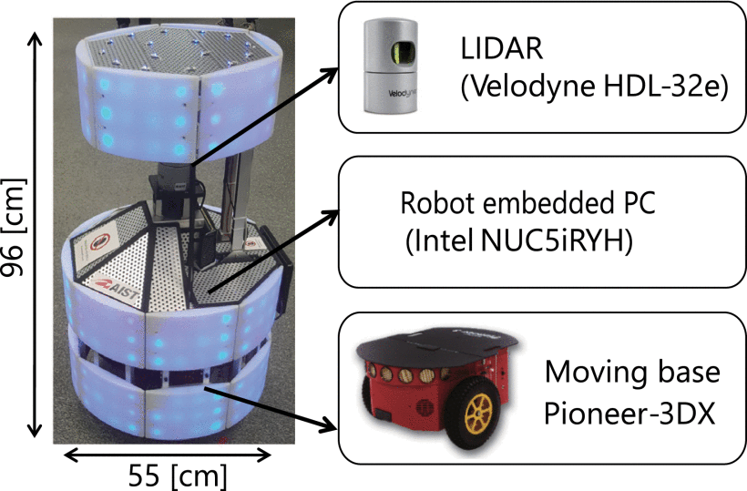
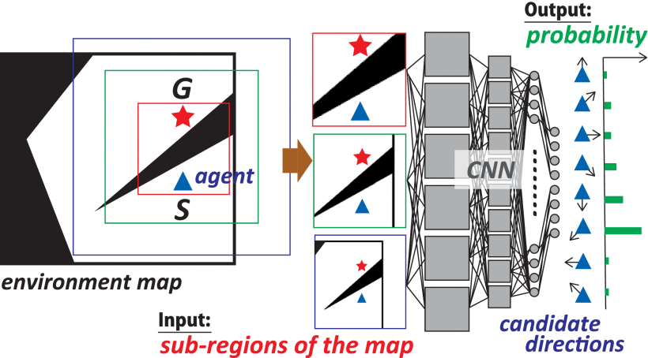

Robot navigation using deep neural networks has been drawing a great deal of attention. Although reactive neural networks easily learn expert behaviors and are computationally efficient, they suffer from generalization of policies learned in specific environments. As such, reinforcement learning and value iteration approaches for learning generalized policies have been proposed. However, these approaches are more costly. In this letter, we tackle the problem of learning reactive neural networks that are applicable to general environments. The key concept is to crop, rotate, and rescale an obstacle map according to the goal location and the agent's current location so that the map representation will be better correlated with self-movement in the general navigation task, rather than the layout of the environment. Furthermore, in addition to the obstacle map, we input a map of visited locations that contains the movement history of the agent, in order to avoid failures that the agent travels back and forth repeatedly over the same location. Experimental results reveal that the proposed network outperforms the state-of-the-art value iteration network in the grid-world navigation task. We also demonstrate that the proposed model can be well generalized to unseen obstacles and unknown terrain. Finally, we demonstrate that the proposed system enables a mobile robot to successfully navigate in a real dynamic environment.
@article{kanezaki2018_goselo,
author={Asako Kanezaki and Jirou Nitta and Yoko Sasaki},
journal={IEEE Robotics and Automation Letters},
title={GOSELO: Goal-Directed Obstacle and Self-Location Map for Robot Navigation Using Reactive Neural Networks},
year={2018},
volume={3},
number={2},
pages={696-703},
doi={10.1109/LRA.2017.2783400},}